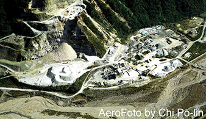
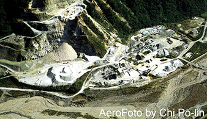

Landscape Changes Along Taiwan's Coastline in Two Decades
Change 1: Taimali River, Taitung


The landscape of Taimali River mouth is changed permanently by the natural disaster. On August 2009, Typhoon Morakot came from the Pacific Ocean with 90 mph (150 km/h) peaking wind and 109.3 inch (2777 mm) peaking rainfall. The extreme amount of rain caused the sudden rise in river water level and the collapse of river bank. The water flooded the mouth area and resulted in the destruction of bridges, railways, buildings, and farms as shown in the right two images above retrieved from Taiwan National Museum of Natural Science.
Traditional Chinese Translation:
自然災害永久改變了台東太麻里溪河口的地貌。
在2009年八月，颱風莫拉克夾帶 150km/h 的最大風速與 2777mm 的尖峰雨量從太平洋方向侵襲台灣。
強大的降雨量使得溪水暴漲，最後太麻里溪堤防無法承受巨大的水量而潰堤。
洪水泥流侵襲河口一帶並且沖毀了橋梁、南迴鐵路鐵道、房屋與農地如右上兩圖擷取自國立自然科學博物館網站。
Change 2: Heping Power Plant, Hualien
 


Heping Power Plant constructed from 1999 to 2002 is a coal-fired power plant located in a cement industrial park near processing factories and a specifically designed shipping harbor. It is owned by Taiwan Cement Corporation and used to support the massive power needed for cement production. It generates 1320 Megawatt per year and is the largest power plant on Taiwan’s east coast. In the timelapse, the areas that change from green to white indicate limestone mines. The mining process removes the top of several mountains as shown in the right two images above.
Traditional Chinese Translation:
和平發電廠是以煤炭為主要燃料的火力發電廠，興建於1999年並於2002年完工。
位於台灣水泥公司的和平水泥工業園區內，鄰近工廠與專用港口，並供應製造水泥所需的大量電力。
每年發電量132萬千瓦，為台灣東部最大電廠。延時攝影中綠色變為白色的部分為石灰岩礦山。
開挖石灰岩礦的過程剷除幾座山頭如上方中圖的和仁礦場與右圖的勇士山礦場。
Change 3: Taipei Harbor, Taipei


Taipei Harbor is an artificial harbor built by land reclamation near Taiwan’s capital city, Taipei. It is designed to be an auxiliary harbor of the largest international one, Keelung Harbor, in north Taiwan and will possibly replace Keelung Harbor in the future. Ports on the harbor are mainly used for operations of large container ships. The harbor shares bulk cargo volume with Keelung Harbor and thus reduces the heavy traffic load in central Taipei area. Right two images above are retrieved from Taipei Port Branch Office website and Wikipedia.
Traditional Chinese Translation:
台北港是一座由填海造陸而來的人工港，位於新北市八里區。
此港口的設計為用於基隆港的輔助港，其面積與基隆港還大並且未來還可能會取代基隆港成為北台灣最大國際商港與物流中心。
港口上的碼頭主要用於起降大型貨櫃。台北港也起到分擔基隆港大型貨物運輸的作用因而降低了台北市區繁忙的貨運交通量。
上方右兩圖取自台北港官方網站與中文維基百科。
Change 4: Datan Power Plant, Taoyuan


Datan Power Plant is a gas-fired combined-cycle thermal power plant located in Taoyuan. It balances the power needed between northern and southern Taiwan. Although using liquefied natural gas costs more, it emits less carbon dioxide and thus is more environmental friendly and reduces the air pollution. Combining several thermodynamic cycles like reusing the waste heat of a previous heat engine improves the overall efficiency and reduces fuel cost. In addition, the power plant also has several wind power units operated by the wind from Taiwan Strait. The right two images above are retrieved from Wikipedia and Taiwan Power Company’s official website.
Traditional Chinese Translation:
大潭發電廠是位在桃園的一座天然氣複循環電廠。此電廠緩和了南部與北部的電力供需失衡問題。
以天然氣為燃料雖然使發電成本升高，但是卻減少了電廠的二氧化碳排放量，對自然環境比較友善而且降低了空氣汙染。
複循環系統將幾個熱力學循環結合在一起，例如重複利用前一級機組產生的廢氣來驅動下一級發電機組，達到降低燃料成本與提高熱循環效率的成果。
此電廠也設置了幾座風力發電機組利用台灣海峽的風力。
上方右兩圖取自維基百科與台灣電力公司網站。